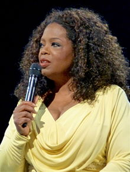

Oprah Gail Winfrey (born Orpah Gail Winfrey; January 29, 1954) is an American media proprietor, talk show host, actress, producer, and philanthropist.She is best known for her talk show The Oprah Winfrey Show, which was the highest-rated television program of its kind in history and was nationally syndicated from 1986 to 2011.Dubbed the "Queen of All Media", she has been ranked the richest African-American of the 20th century, the greatest black philanthropist in American history,and is currently North America's first and only multi-billionaire black person.Several assessments regard her as the most influential woman in the world. In 2013, she was awarded the Presidential Medal of Freedom by President Barack Obama and honorary doctorate degrees from Duke and Harvard.
Winfrey was born into poverty in rural Mississippi to a teenage single mother and later raised in an inner-city Milwaukeeneighborhood. She has stated that she was molested during her childhood and early teens and became pregnant at 14; her son died in infancy.Sent to live with the man she calls her father, a barber in Tennessee, Winfrey landed a job in radio while still in high school and began co-anchoring the local evening news at the age of 19. Her emotional ad-lib delivery eventually got her transferred to the daytime-talk-show arena, and after boosting a third-rated local Chicago talk show to first place, she launched her own production company and became internationally syndicated.
Credited with creating a more intimate confessional form of media communication, she is thought to have popularized and revolutionized the tabloid talk show genre pioneered by Phil Donahue, which a Yale study says broke 20th-century taboos and allowed LGBT people to enter the mainstream. By the mid-1990s, she had reinvented her show with a focus on literature, self-improvement, and spirituality. Though criticized for unleashing a confession culture, promoting controversial self-help ideas,and an emotion-centered approach,she is often praised for overcoming adversity to become a benefactor to others. From 2006 to 2008, Oprah Winfrey's endorsement of Barack Obama, by one estimate, delivered over a million votes in the close 2008 Democratic primary race.